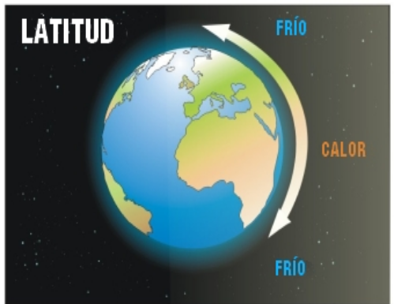
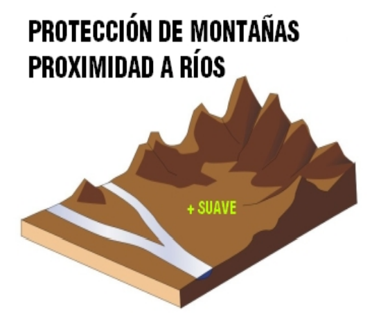
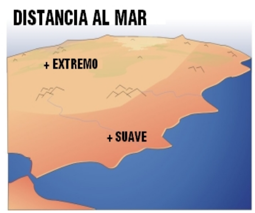
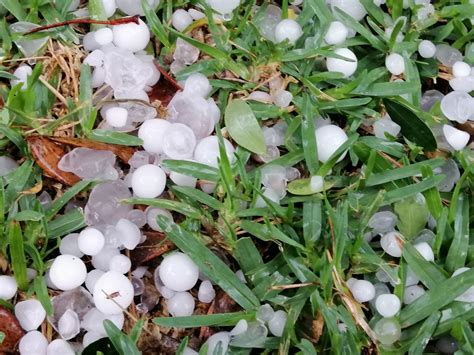
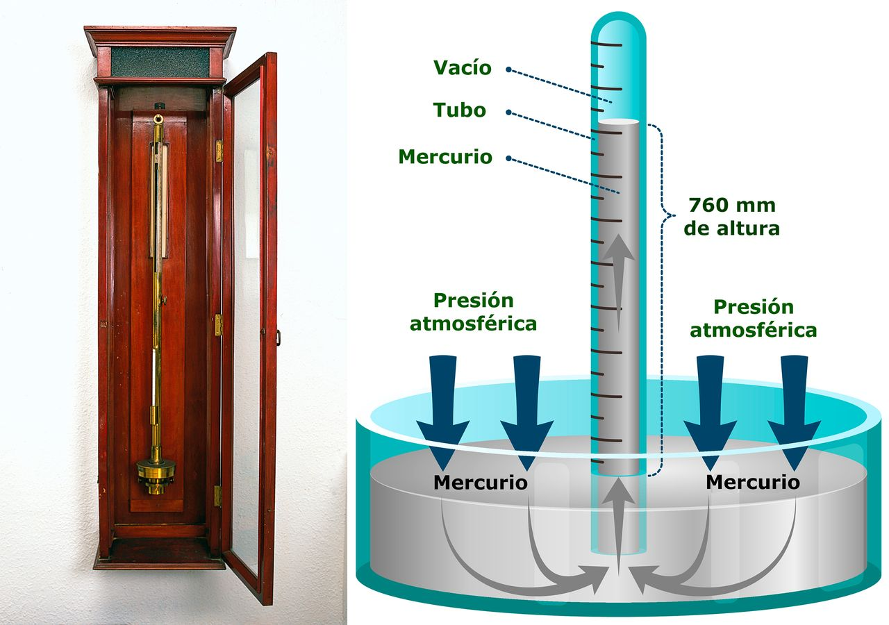
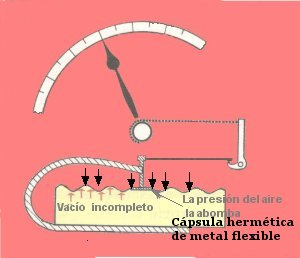

FA_UD2_Características del clima y microclima
FUNDAMENTOS AGRONÓMICOS
UD 2
CARACTERÍSTICAS DEL CLIMA Y MICROCLIMA
CLIMA Y MICROCLIMA
Llamamos clima al conjunto de condiciones atmosféricas (temperaturas, precipitaciones, humedad, viento…) que predominan en una zona de la Tierra.
Llamamos microclima al conjunto de condiciones climáticas que predominan en un determinado lugar por sus características distintas a las de la zona en que se encuentra.
La diferencia entre tiempo y clima es que el tiempo es el estado de la atmósfera en un momento y en un lugar determinado. Es algo instantáneo y cambiante. El clima es una sucesión periódica de tipos de tiempo. Es el conjunto de condiciones atmosféricas que predominan en una zona de la tierra. Es la suma de los tipos de tiempo que hay en un lugar.
Hay una serie de factores geográficos que definen el clima de cada región, los más importantes son:
-
Latitud: la distancia a la que nos encontramos del Ecuador terrestre. Cuanto más lejos estemos del ecuador más frío hará. Determina las 3 zonas climáticas: Zonas frías, templadas y cálidas.
-
Altitud: la altura de un lugar respecto al nivel del mar. Influye en la temperatura, siendo más frías en las zonas altas y en las precipitaciones, siendo más abundan en las zonas altas. Conforme subimos en altura la temperatura desciende del orden de 0´6 a 1º por cada 100 m y las posibilidades de lluvia aumentan porque el aire frío tiene menos capacidad de retener el vapor de agua.
-
Relieve: no es lo mismo las zonas de montaña que las zonas de pradera o bosques.
-
Distancia al mar: y la mayor o menor influencia de sus brisas ya que el mar suaviza las temperaturas. **En invierno el mar da calor a la tierra y en verano refresca la tierra. **




Tipos de climatología
Básicamente se distinguen tres tipos de clima: cálido, templado y polar. Es decir, en términos más coloquiales: caluroso, equilibrado y frío.
En la siguiente clasificación vamos a ver a grandes rasgos los tipos de climas que hay y las características de cada uno. Además, de cada gran tipo de clima hay algunos subtipos mucho más detallados atendiendo a zonas más pequeñas.
-
CLIMAS CÁLIDOS: Estos climas se caracterizan por tener altas temperaturas. La media de la temperaturas anuales rondan los 20 grados y apenas ha diferencias muy grandes entre estaciones. Son lugares donde abundan las praderas y selvas con alta humedad ambiental y, en muchos casos, precipitaciones abundantes. Nos encontramos son los subtipos: Ecuatorial, tropical, subtropical árido, desértico y semidesértico.
-
CLIMAS TEMPLADOS: Se caracterizan por tener temperaturas medias que rondan los 15 grados. En estos climas podemos ver las estaciones del año bien diferenciadas. Nos encontramos con lugares repartidos entre las latitudes medias . Tenemos los subtipos siguientes: clima mediterráneo, chino, oceánico y continental.
-
CLIMAS FRÍOS: En estos climas las temperaturas no suelen superar los 10 grados centígrados y hay abundantes precipitaciones en forma de nieve y hielo. Tenemos el clima polar y el clima de alta montaña.

Los climas de España
España cuenta grandes rasgos con dos tipos de climas: el templado y el subtropical canario, pero su situación geográfica peculiar entre un océano y un mar y la complejidad orográfica de nuestro relieve complican nuestra condición climática, provocando que cada uno de ellos tenga a su vez variantes climáticas.
-
Clima oceánico: Propio de la fachada norte de España, con gran influencia del mar y grandes precipitaciones durante todo el año.
-
Clima continental: Presenta una temperatura media mayor de 30ºC durante el mes mas cálido y menos de 0ºC durante el mes mas frío.
-
Clima mediterráneo: son zonas litorales del mediterráneo. Inviernos suaves y veranos cálidos. Pocos días de lluvia al año pero de gran intensidad, concentradas en otoño e invierno.
-
Subtropical: el clima subtropical canario es muy diferente al resto de España debido a su latitud y a las corrientes de agua fría que atemperan la influencia de las altas temperaturas africanas.
-
Clima de montaña: propias de las altas montañas. Temperaturas e inviernos largos y muy fríos. Precipitación en forma de nieve. Veranos cortos y calurosos.

Características del clima mediterráneo
El clima mediterráneo es un subtipo de clima .Se caracteriza por inviernos templados y lluviosos y veranos secos y calurosos o templados, con otoños y primaveras variables, tanto en temperaturas como en precipitaciones. El nombre lo recibe del mar Mediterráneo, área donde es típico este clima y adquiere mayor extensión geográfica, pero también está presente en otras zonas del planeta, aunque con variaciones en cuanto a la distribución de las temperaturas.
Las lluvias no suelen ser muy abundantes, aunque hay zonas donde se sobrepasan los 1000 mm. Pero la característica principal es que estas no se producen en verano.
Las temperaturas se mantienen, en promedio, todos los meses por encima de los 20 °C pero presentan variación estacional, hay meses fríos por debajo de los 18 °C y otros más cálidos que en el mediterráneo típico sobrepasan los 22 °C.
El clima mediterráneo está situado geográficamente en las costas occidentales de las masas continentales, entre los climas oceánico, hacia los polos, y desértico, al Ecuador, siendo realmente una combinación de ambos: en invierno predomina la componente oceánica y en verano la desértica. Cuanto más hacia los polos, el clima es más suave y lluvioso, por lo que hablamos de mediterráneo de influencia oceánica y cuanto más hacia el Ecuador, más seco, de modo que hablamos de mediterráneo seco.
ELEMENTOS CLIMÁTICOS
La temperatura
El sol lo consideramos como el motor del tiempo, ya que es la fuente de energía que pone en marcha los procesos meteorológicos. Éstos empiezan con el calentamiento del aire que provoca su movimiento y su variación en su retención del agua. La variación de la temperatura del aire depende de la latitud, de la altitud y de la mayor o menos cercanía al mar. La temperatura la medimos en grados centígrados (ºC).
La temperatura disminuye con la altura. La distribución geográfica de la temperatura depende de la latitud, ya que determina la cantidad de insolación terrestre que recibe un territorio. En el ecuador se recibe mayor insolación (mayor temperatura) porque inciden perpendicularmente los rayos del sol. Los días y las noches tienen casi la misma duración y las variaciones de las temperaturas entre el día y la noche y entre las estaciones son pequeñas. A medida que nos acercamos a los polos las amplitudes térmicas, tanto diurna como anual (diferencia entre la media del mes más cálido y la media del mes más frío) son mayores.
Los rayos del sol calientan por igual la tierra y el mar. Sin embargo el mar se enfría y se calienta más lentamente que la tierra, por lo que si la tierra está fría (en invierno), el mar está más caliente, y si está más caliente (verano), el mar está más fresco. Esto suaviza mucho las temperaturas de los lugares cercanos al mar.
La temperatura media es uno de los principales parámetros climáticos. La media anual se calcula a partir de los valores medios diarios, obtenidos de la temperaturas máximas (días) y mínimas (noche). La tendencia de la distribución de las temperaturas medias anuales es aumentar desde el interior hacia la costa y del norte al sur.
ACCIÓN DE LA TEMPERATURA SOBRE LA VEGETACIÓN
La temperatura ejerce una influencia decisiva en muchos procesos fisiológicos de las plantas como la fotosíntesis, la respiración, etc. Todos estos procesos no se producen cuando la temperatura está por debajo de un valor mínimo o por encima de un valor máximo, si se sobrepasan estos valores pueden producirse daños más o menos graves en distintos órganos del vegetal. En función de cada tipo de planta se puede hablar de:
-
Temperatura base o umbral térmico inferior o cero de vegetación:*** es la temperatura a la cual el desarrollo se detiene debido al frío. A medida que la temperatura aumenta por encima de la temperatura base, el desarrollo se acelera hasta que se alcanza la temperatura óptima. ***
-
Temperatura máxima o umbral superior:** aquella temperatura por encima de cual la planta detiene su desarrollo o este es muy lento. **
-
Temperaturas óptimas: son los valores térmicos que aseguran la velocidad potencial de crecimiento máxima. En general, está situado entre los 25 y 28ºC para la gran parte de nuestras plantas, pero puede llegar a los 30ºC para plantas procedentes de zonas más cálidas como el maíz.
-
Temperaturas letales: son las temperaturas más bajas y más elevadas que puede soportar una determina punto de marchitez planta. Así, temperaturas bajas que dejen el suelo cubierto de una capa de hielo impide la respiración de las plantas. Por otro lado, la mayor parte de las plantas cultivadas de la zona templada no resisten temperaturas superiores a los 50ºC.
-
Integral térmica: es el estudio y cálculo de la relación entre la aparición de las diferentes fases del desarrollo de las plantas y la evolución de las temperaturas. Las temperaturas elevadas hacen que la planta pase más rápidamente por las fases de su desarrollo.


TEMPERATURAS ELEVADAS
Por lo general temperaturas superiores a 35-40 ºC suelen ser perjudiciales para la mayoría de las plantas, pero como ya hemos visto eso va estar condicionado por la especie vegetal en cuestión que tendrá una temperatura óptima de crecimiento. Podemos hablar de:
-
Punto de marchitez: Si* por el exceso de calor el contenido de humedad del suelo baja progresivamente, las plantas encontrarán cada vez mayores dificultades para absorber agua, llegando a un punto que se iniciarán los procesos de marchitez. Si estos procesos pueden ser recuperables con nuevos aportes de agua, estamos ante una marchitez temporal, y si no hay recuperación decimos que se ha alcanzado el punto de marchitez. *
-
Golpe de calor: Cuando las temperaturas sufren una subida drástica y en poco tiempo, ocasionan en los vegetales un exceso de transpiración que no es compensado con la absorción de agua por las raíces ni por los mecanismos de ascensión de savia. No llega a provocar marchitez pero sí que ocasiona trastornos importantes en yemas, hojas y frutos en vías de maduración, causando graves pérdidas en la agricultura.
ACCIÓN DEL FRÍO. EFECTO ESTIMULADOR
Hasta ahora hemos planteado que para un crecimiento de las plantas necesitamos que las temperaturas sean altas, pero la acumulación de horas de frío también ayuda a las plantas a salir de su letargo, es como un indicador que tienen un preaviso de cuando pueden empezar a emerger.
- Horas-frío:
La acción del frío se manifiesta sobre los letargos de las yemas o semillas, permitiendo que después de recibir un número de horas de refrigeración o bajas temperaturas puedan brotar o germinar. Las horas de frío se acumulan y después de sumar un número de horas de frío determinado, dependiendo de cada especie, se produce la salida del letargo de las semillas o de los brotes. El frío destruye de ciertas hormonas que inhiben el crecimiento de las plantas.
Las temperaturas que producen el efecto estimulador son normalmente, bajas, pero siempre superiores a los cero grados centígrados. Cada especie vegetal e incluso variedad tienen sus propias temperaturas que les estimula. En las zonas templadas como la nuestra se admite que las temperaturas medias suelen estar comprendidas entre 3 y 7ºC.
En la siguiente tabla podemos apreciar algunas especies:
Número de horas de frío de árboles frutales
FRUTALES DE HOJA CADUCA NÚMERO DE HORAS DE FRIO
Variedades de Manzano 800 – 1.000 horas
Albaricoquero 500 – 800 horas
Cerezo-Avellano-Nogal 700 horas
Almendro 100 – 500 horas
BAJAS TEMPERATURAS. HELADAS.
Consideramos bajas temperaturas aquellas que se encuentran por debajo del óptimo de actividad de la planta dependiendo del estado fisiológico en que se encuentre.
Los efectos más perjudiciales de las bajas temperaturas son:
-
Reducción de la actividad metabólica de las plantas, al reducirse la temperatura disminuye la energía calórica lo que produce un ralentizamiento de las reacciones bioquímicas en la planta. Esta disminución de velocidad influye en la fotosíntesis, la respiración, la absorción de nutrientes, etc.
-
La formación de cristales de hielo por la solidificación del agua, produce daños en los órganos y tejidos celulares ya que l**as plantas como la mayoría de los seres vivos tienen un alto contenido de agua en su composición: **
-
Se pueden romper las membranas de las células de las plantas por la formación de hielo.
-
Si se produce una repentina subida de temperatura después de una helada, se puede producir una gran evaporación de agua hacia la atmósfera, que hace deshidratarse a las células.

*** Helada en floración de ciruelos***
Presión
Otro elemento determinantes para determinar la climatología de una zona es la presión atmosférica. La presión atmosférica es el peso de la masa de aire por cada unidad de superficie. Hay dos parámetros que influyen en el aumento o disminución de la presión:
-
La altura: la presión disminuye a medida que aumenta la altitud. En igualdad de condiciones habrá más presión en las partes bajas de una montaña que en las altas.
-
La temperatura: **la distinta distribución de las radiaciones solares provoca un calentamiento zonal de la superficie terrestre con variaciones de presión. **
¿Y por qué influye la presión sobre el clima? Pues porque las diferencias de presión atmosférica entre distintos puntos de la corteza terrestre hacen que el aire se desplace de un lugar a otro, originando los vientos.
La presión atmosférica a nivel del mar (altitud 0) es de 1.013 mb. Las zonas donde la presión es superior a esta cifra las denominaremos zonas de altas presiones, y en ellas se dan los climas secos y las zonas donde las presiones son inferiores, serán zonas de bajas presiones con climas húmedos.
Si unimos los puntos de igual presión en un mapa por medio de una línea (isobaras), tendremos una representación de las presiones atmosféricas de una zona, son los “campos de presiones”. En estos mapas las zonas con más bajas presiones se representan con una (B) y las llamamos depresiones o borrascas y las zonas de altas presiones las representamos con una (A) y las llamamos anticiclones.
Las borrascas están formadas por masa de aire frío y los anticiclones por masa de aire caliente, la alternancia de borrascas y anticiclones nos marcan los distintos tipos de tiempo. El descenso de la presión es síntoma de mal tiempo y el ascenso de tiempo despejado.
Humedad atmosféricas
El tercer factor que vamos a estudiar como condicionante fundamental del clima es la humedad atmosférica.
La humedad atmosférica nos va a indicar la cantidad de vapor de agua presente en el aire. Al vapor de agua lo podríamos considerar como un gas invisible que forma parte de la atmósfera.
Normalmente cuándo se habla de humedad atmosférica hablamos en términos de humedad relativa. La humedad relativa se expresa en forma de tanto por ciento (%) de agua en el aire. El 0 % de humedad significa que no hay vapor de agua, el 100% de humedad significa que existe tal cantidad de vapor de agua en la atmósfera que el aire no puede contener más, se dice que está saturado, el agua líquida que hubiera en ese momento en la atmósfera no puede evaporarse por lo que se forman minúsculas gotitas que mojan el suelo o forman gotitas de niebla.
La humedad relativa aumenta al disminuir la temperatura, por lo que los valores mayores de humedad relativa se dan durante el invierno y los más bajos en verano, esta diferencia estacional es más acentuada en las zonas interiores de la Península pues en las zonas costeras la humedad suele permanecer alta durante todo el año.
La humedad relativa suele variar entre el 20% en los días extremadamente secos y el 100 % en los días de niebla o lluvia continua. La saturación es el punto a partir del cual una cantidad de vapor de agua no puede seguir creciendo y mantenerse en estado gaseoso, sino que se convierte en líquido y se precipita.
METEOROS
Los fenómenos meteorológicos o meteoros los podemos clasificar como los elementos más visibles que nos indican los fenómenos físicos naturales que se dan en la atmósfera. Entre ellos se encuentran las nubes, el viento y la lluvia y surgen como resultado de la combinación de los distintos elementos climatológicos que hemos visto.
Las nubes se forman por la condensación del vapor de agua (humedad relativa) que hay en una masa de aire en la atmósfera en un momento dado, que esta masa de aire se mueva o se esté quieta va depender fundamentalmente de las variaciones de presión atmosférica que se producen a su alrededor, el vapor de agua se evapora y condensa por variaciones de temperatura. Si la temperatura, la humedad y la presión son los elementos fundamentales que van a determinan el clima; el viento, las nubes y las precipitaciones son los fenómenos físicos que más fácilmente vamos a apreciar.
Nubes
Para simplificar un poco diremos que la mayoría de las nubes tienen su origen en corrientes de aire ascendente, el aire se enfría al elevarse y el vapor de agua que contiene acaba por formar una masa nubosa. Las nubes están formadas por millones de gotitas de agua microscópicas, como las que forman cuando tapamos una olla y ponemos a hervir.
La mayoría de los nombres de nubes contienen prefijos y sufijos latinos que, al combinarse, dan una indicación del tipo de nube. Algunos de ellos son los siguientes:
-
Stratus/estrato: alargado, allanado y nivelado. Nubes estratificadas.
-
Cumulus/cúmulos: montón, colmo. Nubes de desarrollo vertical.
-
Cirrus/cirro: plumoso, fleco. Nubes de cristales de hielo.
-
Nimbus/nimbo: portador de lluvia, capaces de formar precipitaciones
-
Alto: nivel medio
Las nubes altas suelen formarse por encina de los 5.000 metros; las nubes medias se suelen formar entre los 2.000 y los 7.000 metros; y las nubes bajas suelen formarse a una altura máxima de 2.000 metros.
La Organización Meteorológica Mundial clasifica las nubes en diez tipos principales:
CIRROS
Nubes separadas, en forma de filamentos blancos y delicados, de aspecto fibroso o sedoso, o ambas cosas a la vez, formadas por cristales de hielo, que le dan su peculiar aspecto. Cuando se presentan aislados son síntoma de buen tiempo, pero si avanzan organizados y aumentando progresivamente indican un cambio inminente del tiempo: algún frente o borrasca se aproxima.

CIRROCÚMULOS
Capa delgada de nubes blancas, sin sombras propias, compuesto de elementos muy pequeños en forma de gránulos, mezclados o separados, dispuestos más o menos regularmente (a veces según bandas que cruzan el cielo, dándole aspecto de “cielo aborregado”).
Salvo si aumentan considerablemente con el paso del tiempo, no suelen indicar cambio de tiempo. Otras veces aparecen asociados a corrientes en chorro a gran altura.

CIRROSTRATOS
Género de nubes en forma de velo blanquecino y transparente, de estructura fibrosa o lisa, que cubren de modo total o parcial el cielo. Este tipo de nubes suele producir un halo solar o lunar.
Los cirrostratos suelen anunciar cambios, se acerca un frente cálido y aumentan su espesor según este avanza.

ALTOCÚMULOS
Capa de nubes blancas o grises, o de ambas tonalidades a la vez, con sombras propias, y compuesto por láminas, masas redondeadas, rodillos, etc., que pueden estar unidas o no, y de aspecto a veces difuso.
Los altocúmulos aislados son indicadores de buen tiempo. Cuando van en aumento o mezclados con altostratos indican la proximidad de un frente o una borrasca, y en tales casos pueden desprender precipitaciones débiles.

ALTOSTRATOS
Capa nubosa, grisácea o azulada, con aspecto estriado, que cubre el cielo total o parcialmente, presentando partes delgadas que permiten ver vagamente el Sol.
Están asociados a frentes cálidos y suelen dejar lluvias débiles continuas.

NIMBOSTRATOS
Nubes densas de color gris oscuro, cuyo aspecto se hace difuso por la caída de precipitación. El notable espesor en todas sus partes oculta la visión del Sol. Están asociados a los frentes cálidos y suelen ocasionar lluvias continuas.

ESTRATOCÚMULOS
Manto de nubes grises o blancas, o de ambos colores a la vez, que tienen casi siempre partes oscuras, y con forma de pesados rodillos o masas globulares alargadas, de aspecto no fibroso, y dispuestas según largas bandas paralelas que cubren todo o gran parte del cielo.
No indican cambios de tiempo y se asocian al buen tiempo cuando en verano aparecen a media tarde.

ESTRATOS
Capa nubosa gris y uniforme, sin forma particular, ni estructura, que por lo general cubre completamente el cielo.
Cuando producen nieblas suelen estar asociados a tiempo anticiclónico. Si aparecen debajo de los altostratos o nimbostratos se asocian a un frente cálido y pueden dejar lloviznas.

CÚMULOS
Nubes aisladas, por lo general densas, y de contornos bien delimitados, que se desarrollan verticalmente en forma de torres con forma de coliflor. Estas nubes suelen ser de un blanco brillante arriba y algo oscuras en su base, casi perfectamente horizontal.
Los cúmulos corresponden al buen tiempo cuando hay poca humedad ambiental y poco movimiento vertical del aire. En el caso de existir una alta humedad y fuertes corrientes ascendentes, los cúmulos pueden adquirir un gran tamaño llegando a originar tormentas y aguaceros intensos.

CUMULONIMBOS
Nubes densas y grandes, de gran desarrollo vertical, en forma de torres gigantescas, cuyo extremo superior es liso o fibroso, y casi siempre achatado con forma de yunque.
Producen casi siempre tormenta con precipitaciones en forma de lluvia o granizo.


Precipitaciones
Las nubes están formadas por pequeñas gotas microscópicas. La mayoría de las veces la lluvia se forma en nubes que están en zonas altas de la atmósfera donde se dan bajas temperaturas lo que hace coexistir pequeños cristales de hielo con las gotas microscópicas. Las gotitas microscópicas se van uniendo a los cristales de hielo haciéndose cada vez más grandes, al ser cada vez más grandes pesan más y tienden a caer, al ir descendiendo aumenta la temperatura en la atmósfera y los cristales de hielo se transforman en lluvia. Pero dependiendo de la temperatura y el grado de condensación, el agua que generalmente precipita en forma de lluvia líquida, también puede hacerlo en forma de cristales de hielo (nieve) o de masas densas de hielo de diverso tamaño (granizo).
Tipos de precipitación más característicos son:
-
Llovizna: también conocida como orballo, sirimiri o calabobos. Está formada por numerosas y finas gotas de agua de diámetro inferior a medio milímetro. La velocidad de caída es tan lenta que parecen flotar en el aire. Proceden típicamente de las nubes tipo estratos.
-
Lluvia: es la forma más común de precipitación. Las gotas tienen un diámetro de más de medio milímetro y caen con velocidad moderada. Procede casi siempre de los nimboestratos y altoestratos.
-
Chubascos: pueden ocasionar tormentas. Las gotas de agua son grandes. La precipitación es intensa, discontinua y ocasional. Si es torrencial puede provocar grandes inundaciones. Los chubascos pueden ser de nieve si la temperatura es inferior a cero grados. La únicas nubes que los producen son** los cumuloninmbos. **
-
Nieve: está formada por conglomerados de cristales de hielo en su mayor parte ramificados (a veces con forma de estrellitas hexagonales) que se sueldan formando copos. Cuando la nieve se funde ligeramente, se habla también de aguanieve.
-
Granizo: son granos de hielo redondeados y translúcidos. El diámetro varía entre 5 y 50 milímetros y caen, al igual que los chubascos, en un corto período de tiempo. Sólo los producen los cumulonimbos.


Viento
El viento es el desplazamiento que sufren las distintas masas de aire de la atmósfera. Las masas de aire se mueven para intentar igualar la presión atmosférica a la que se hayan sometidas.
El viento es la circulación del aire de un lugar a otro, con más o menos fuerza. Transporta las masas de aire con unas determinadas características de temperatura y humedad de un lugar a otro. Su principal efecto es mezclar distintas capas o bolsas de aire, esto influirá decisivamente en el tiempo que tendremos. Cuando se concentra la humedad en una zona y esta asciende hasta una capa de aire más fría, se producen las precipitaciones.
Debido a la situación y la orografía hablamos de vientos regionales, como por ejemplo:
-
Ábrego: viento templado y húmedo del suroeste en ambas Castillas, Extremadura y Andalucía con temporal persistente de lluvia. En Cantabria es conocido como viento castellano, mientras que en Asturias se denomina aire de las castañas, ya que cuando sopla con fuerza provoca la caída de este fruto.
-
Bochorno: viento del sureste y procedencia mediterránea, que entra por la desembocadura del Ebro y sube río arriba. Es un viento seco, cálido y agobiante en verano; suave, templado y húmedo durante otoño y primavera.
-
Cierzo o mistral: viento frío y seco del noroeste, de esos que penetran los huesos, y que sopla con frecuencia en el Valle del Ebro.
-
Galerna: viento con un salto brusco del suroeste al noroeste que se presenta en el Golfo de Vizcaya y Costa Cantábrica, con intenso temporal en el mar.
-
Gallego: viento del noroeste en el Duero que sopla frío y racheado.
-
Levante: posiblemente sea el que más nos suene. Es un viento del este que sopla en la costa mediterránea española. El origen del viento de levante está en el Mediterráneo central, en zonas cercanas a las islas Baleares. Alcanza su mayor velocidad en el Estrecho de Gibraltar, donde deja lluvias en la vertiente este de las sierras gaditanas, antes de bajar muy seco, ya descargado de humedad, y con altas temperaturas a lo largo de la vertiente oeste.
-
Llebeig: viento del suroeste que sopla en las costas del sur Mediterráneo y trae normalmente polvo en suspensión procedente del Sáhara. Su aparición se asocia a la llegada de tormentas y lluvias.
-
Poniente: viento del oeste húmedo y templado que entra por las costas portuguesas y arrastra las borrascas atlánticas, con sus sistemas nubosos, hacia el interior de la Península. A medida que avanza va perdiendo humedad y aumentando de temperatura, llegando finalmente a la costa levantina como un viento seco y cargado de calor.
-
Siroco(Xaloc): este viento del sureste afecta a Valencia, Cataluña y Baleares. Es muy cálido y suele arrastrar calima del Sáhara.
-
Tramontana: viento frío y turbulento de componente norte, que sopla especialmente en la comarca del Ampurdán (nordeste de Cataluña) y en las islas Baleares. En ocasiones puede llegar a alcanzar velocidades próximas a los 200 km/h.
-
Gregal: Viento frío y seco de componente noreste característico de las islas Baleares.
Llamamos viento dominante a los vientos que soplan con mayor frecuencia en una zona. Sobre la velocidad del viento a lo largo del día, por lo general, el viento es más fuerte de día y más flojo durante la noche. Presenta una máxima velocidad durante las primeras horas de la tarde, y el mínimo a la salida del sol, el viento esta en mayor calma por la noche que durante el día, a la salida del sol. Esto es así en alturas inferiores a 1.000 m, sobre colinas y montañas que se producen otros efectos.
En agricultura los problemas asociados al viento son, entre otros, la pérdida de suelo debido a la erosión eólica, daños en las estructuras de las plantas (rotura de ramas, arqueo de troncos), problemas de polinización por vientos fuertes, daños en infraestructuras agrarias (rotura de plásticos de invernadero, sistemas de riego…) ¿Y qué podemos hacer? Diseño de plantaciones teniendo en cuenta la dirección del viento dominante colocación de tutores para corregir desviaciones de tronco, sistemas de poda que permitan circulación del aire, colocación de cortavientos, de material vegetal o inerte.
APARATOS DE MEDIDA DE VARIABLES CLIMÁTICAS
Termómetro
Para medir la cantidad la temperatura se utiliza el termómetro. El termómetro más conocido es el de mercurio que basa su funcionamiento en la contracción y expansión que experimente el mercurio encerrado en un tubo de cristal calibrado, los termómetros de máxima y de mínima dejan marcados los puntos de temperatura más alta y más baja durante cualquier periodo. Aunque en la actualidad la mayoría de los termómetros son de uso digital, los más utilizados en Agricultura son los termómetros de infrarrojos que constan de un sensor que se pone en contacto con la superficie del cuerpo que queramos registrar la temperatura, bien sea el suelo o partes del vegetal. La temperatura del aire se suele medir en grados centígrados.
- Termómetro de max y min termómetro digital Termómetro infrarrojos*


Barómetro
Para medir la presión utilizamos el barómetro. Hay dos tipos: los de mercurio y los aneroides.



- Barómetro de mercurio *Barómetro aneroide
Higrómetro
Para medir la humedad se utiliza un instrumento llamado higrómetro. Actualmente se utiliza el higrómetro digital. Este modelo realiza los cálculos a través de circuitos electrónico con los cuales se logra expresar en números las pequeñas alteraciones de tensión que son producidas por la variación de algunas propiedades físicas, mediciones que se pueden observar en la pantalla.

Pluviómetro
Para medir las precipitaciones se usa el pluviómetro, hay muchísimos tipos de pluviómetros pero básicamente todos utilizan el mismo sistema, es un recipiente de forma cilíndrica graduado y que recoge el agua de lluvia caída.

Anemómetro y veleta
La velocidad del viento se mide con un anemómetro y la dirección del viento con la veleta.
El anemómetro es un aparato que juega un rol importante dentro del área de la meteorología, permitiendo medir la intensidad del viento. Los más comunes se componen de un sistema de pequeñas aspas y en sus extremos pequeñas cuencas las cuales se les permite oscilar, cuando el viento sopla esta gira y de esta forma arroja los resultados en el dispositivo. La veleta es un dispositivo giratorio que consta de un placa que gira libremente, un señalador que indica la dirección del viento y una cruz horizontal que indica los puntos cardinales.


Las distintas escala s de viento dependiendo de la velocidad son:
** *ESCALA DE VIENTO*
Calma Temblor de hojas- ramas pequeñas se agitan. 6 – 20 Km/h
Moderado Las ramas grandes se mueven. 21 – 40 Km/h
Fuerte Los árboles se agitan. 41 – 70 Km/h
Muy fuerte Ramas arrancadas,- árboles arrancados. 71 – 120 Km/h
Huracanado Árboles arrancados, destrucción instalaciones > 120 Km/h
Estaciones meteorológicas
Una estación meteorológica es el lugar en el que se realizan observaciones del comportamiento de la atmósfera y del medio ambiente. La recopilación de datos emitidos por el instrumental meteorológico y su posterior análisis y estudio permitirán la realización de un diagnóstico de la situación atmosférica en un momento dado.
La ubicación de las estaciones es un aspecto muy importante para que la toma de datos sea correcta. La estación no puede estar en cualquier sitio. Ha de estar en terreno llano con césped y sus alrededores deben estar libres de obstáculos.
En una estación tipo tenemos tres elementos básicos: veleta y anemómetro para la medición del viento, el pluviómetro para medir las precipitaciones y la garita o caseta meteorológica. En su interior situaremos los termómetros de máxima y mínima, el psicrómetro/higrómetro y el termohidrógrafo.
Se recomienda que las garitas sean de madera, bien ventiladas, pintadas e blanco y esmaltadas para reflejar la radicación. El techo debe tener inclinación para escurrir el agua de la lluvia y la nieve y ha de ser doble, con circulación del aire entre ambos para evitar el calentamiento del aire cuando la radicación sea muy intensa. La puerta debe estar orientada al norte, para evitar que los rayos del sol toquen los instrumentos cuando realizamos las observaciones.


MAPAS METEOROLÓGICOS
Las previsiones del tiempo se logran a a través de:
-
Recogida de datos en el planeta: Alrededor de 10.000 estaciones meteorológicas en la Tierra, dividiéndose en globos sondas, embarcaciones y aviones de línea regular, boyas oceanográficas, satélites, etc.
-
Modelo: Potente programa informático que analiza profundamente todas las mediciones. Es capaz de generar mapas de temperatura, lluvia, presión, humedad.
-
Predictores: Interpretación de los datos recogidos y los valores del modelo.
La predicción clásica no ofrece resultados fiables más allá de los 7 u 8 días. En plazos mayores se utiliza la previsión estacional que estima la tendencia en periodos lluviosos, calurosos o secos. Los mares anormalmente cálidos acaban produciendo lluvia sobre los continentes próximos, las grandes masas oceánicas tienen mucha más inercia térmica que la atmosfera siendo previsibles con varios meses de antelación. En la práctica se utilizan modelos climáticos que simulan a la vez el océano, atmósfera y los intercambios entre ambos.
INTERPRETACIÓN DE MAPAS METEOROLÓGICOS:
En un mapa del tiempo deberíamos aprender a interpretar la presión atmosférica, los vientos dirección e intensidad, la posición de los frentes, en fin saber si vamos a tener “buen tiempo ó mal tiempo”, según las necesidades de nuestro trabajo.
Los mapas meteorológicos han sufrido una larga variación a lo largo de la historia, desde simples representaciones en dibujos a los actuales que se realizan con potentes ordenadores donde se hacen recreaciones de posible tiempo a venir tienen una simbología determinada para que puedan ser interpretados uniformemente. Vamos a ver unas pequeñas pautas por si queremos interpretar un mapa del tiempo. Los datos que aparecen en un mapa meteorológico típico son:
- El viento: Se desplaza desde zonas de alta presión a zonas de baja presión. La flecha con la que suele representar suele indicar la dirección desde donde sopla y la intensidad se muestra con el número de rayitas perpendiculares

- Presión atmosférica: Las isobaras son las líneas que aparecen en los mapas meteorológicos, uniendo los puntos de igual presión, como líneas de contorno de las áreas de alta y baja presión. Es interesante saber que cuanto más cercanas están las isobaras, más intenso es el viento. Baja presión, significa temporal, mal tiempo y lluvia, en los mapas de isobaras veremos la B de Bajas Presiones, lo que podremos asociar intuitivamente a B de Borrasca. Altas presiones, buen tiempo y ausencia de nubes, relacionaremos la A que aparece en la línea del tiempo con lo que se podrá asociar igualmente a A Anticiclón.

-
Áreas de alta y baja presión:*** Designadas simplemente con una A azul o una B roja en mayúsculas grandes. ***
-
Temperatura: A menudo se incluye la temperatura en la superficie, las cifras que indican suelen corresponderse con la máxima y mínima.

-
Nubosidad: Se relaciona con la presencia de nubes o no. Como ya se ha indicado cada medio de comunicación utiliza un icono para realizar la representación gráfica de las siguientes características: Soleado, parcialmente soleado, parcialmente nublado, nublado y cubierto (la escala puede ser mayor mayormente soleado, mayormente nublado, etc.).
-
Áreas de precipitación: Hay un símbolo convencional, que es la que generalmente se usa, para cada tipo de precipitación: lluvia, llovizna, nieve, niebla, chubasco y tormenta eléctrica. Sitúan el símbolo sobre la zona geográfica donde se prevea.
-
Frentes: Los frentes fríos, son masas de aire frio, aparecen como una línea azul gruesa con flechas (triángulos) delante de ellos, indicando de ese modo la dirección en la que se mueve. Los frentes cálidos, son masas de aire caliente, son representados con una línea roja gruesa, con semicírculos a lo largo del borde que avanza, indicando el sentido en el que se desplaza. Los frentes estacionarios se representan con una línea que alterna semicírculos rojos de un lado y triángulos azules del otro y los frentes ocluidos aparecen como líneas que alternan triángulos azules y semicírculos rojos del mismo lado de la línea.

INFLUENCIA DE LAS ACTIVIDADES AGROPECUARIAS EN EL CLIMA
Todas las ramas de la actividad agroforestal, y ganadera van a verse afectadas directamente por el cambio climático, a la vez se puede decir que la agricultura y la ganadería son también causantes de estos cambios.
El hecho es que determinadas actividades humanas están provocando este cambio climático. La concentración de gases como el dióxido de carbono, el metano, el óxido nitroso, etc. ha aumentado (más del 30% durante el último siglo), lo que contribuye a un calentamiento global del clima.
En general, se denomina “efecto invernadero” al aumento de la temperatura global de la Tierra debido a la acumulación de gases. Efecto invernadero y calentamiento global son dos conceptos que van de la mano. Y es que lo segundo es consecuencia de lo primero.
Efecto invernadero
En la atmósfera siempre han existido distintos gases que atrapan el calor del sol irradiado por la tierra y lo reflejan actuando como una sábana alrededor de ella. Éstos mantienen la temperatura de la tierra lo suficientemente caliente para posibilitar la vida humana. Estos gases en nuestra atmósfera se conocen como ‘gases de efecto invernadero’, y siempre han estado ahí, sin embargo, en los últimos 150 años, los seres humanos hemos estado quemando combustible para fábricas, vehículos, actividades profesionales, y hogares a una velocidad cada vez mayor. Esto ha aumentado la cantidad de gases de efecto invernadero presentes, especialmente el dióxido de carbono, lo que ha dado como resultado temperaturas en continuo aumento en la atmósfera de la tierra, que a su vez provocan ‘el calentamiento global’ y el cambio climático.
Los gases de efecto invernadero (GEI), son aquellos que dejan pasar la radiación del sol, pero que absorben las radiaciones infrarrojas devueltas por la superficie terrestre, a las que impiden escapar hacia el espacio.
Algunos científicos han previsto que para el año 2100, la tierra podría estar entre 1.4°C y 5.8°C más caliente que en 1990. Esto dependerá fundamentalmente de la toma o no de acciones para disminuir la emisión de gases efecto invernadero de los distintos países, sobre todo de los más contaminantes.
Consecuencia que puede tener todo esto:
-
En España se ha contrastado que durante el siglo XX la media de las temperaturas máximas ha subido un grado. (En el Ártico se estima que 5 ºC). Si la temperatura de los océanos se vuelve más cálida, las tormentas son más intensas. En las últimas décadas, la gravedad y número de ciclones, huracanes y tormentas han aumentado.
-
El nivel del mar ha crecido de 10 a 12 cm durante el mismo periodo de tiempo. Cuando la temperatura de la superficie se calienta, se produce la fusión del hielo de los glaciares y aumenta la cantidad de agua que desemboca en los océanos de todo el mundo.
-
Cambios en el régimen de lluvias, en la Península Ibérica disminuyeron un 23 % durante el siglo XX. La escasez de agua disminuye la producción mundial de alimentos.
-
Especies vegetales y animales silvestres se han desplazado hacia latitudes más extremas y han variado sus fases reproductivas. Plantas y animales mueres o se trasladan a otros hábitats (no nativos), cuando los ecosistemas de los que dependen para sobrevivir se ven amenazados.

Este cambio climático traerá asociado una serie de problemas que en el sector agropecuario se reflejaran como:
-
Cambios de precipitaciones estacionales. Que nos obligan a adaptar otros calendarios de siembra y especies.
-
Aumento de demanda de agua sur y sureste península, disminución de recursos hídricos.
-
Cambios climáticos extremos, sequías, inundaciones que complicaran el manejo de los cultivos.
-
Cambios en la biología de plagas y enfermedades dificultaran su manejo.
-
Aumento de zonas áridas y semiáridas, aumento de zonas de erosión.
Gases del efecto invernadero
Los gases del efecto invernadero son:
-
El vapor de agua (H2O) es el principal gas invernadero. A él le debemos que la Tierra no esté congelada. El vapor de agua (H2O) se produce por la evaporación del agua. Es el más abundante y contribuye a incrementar el efecto invernadero, pero es un gas de vida de vida corta ya que se condensa y precipita. Este gas es el único en que los humanos no tenemos influencia de modificar sus concentraciones por nuestras actividades.
-
Dióxido de carbono (CO2): es el gas que más se asocia a actividades humanas, y el principal responsable del efecto invernadero. La concentración en la atmósfera se debe a la respiración de los seres vivo, la descomposición de la materia orgánica muerta, al uso de combustibles fósiles para procesos industriales y medios de transporte, erupciones volcánicas o los incendios forestales.
-
Metano (CH4): El metano se produce por la descomposición de materias orgánicas, cultivos como el arroz y en los rumiantes durante su proceso digestivo. También se produce por los escapes de depósitos naturales y conducciones industriales. Su potencial de calentamiento global es muy alto: cada kilo de metano calienta la Tierra 25 veces más que la misma masa de CO2. Eso sí, su presencia en la atmósfera es mínima en comparación con el CO2.
-
Óxido nitroso (N2O): gas de efecto invernadero provocado principalmente por el uso masivo de fertilizantes nitrogenados en la agricultura intensiva. También lo producen otras fuentes como las centrales térmicas, los tubos de escape de automóviles y los motores de aviones, la quema de biomasa y también durante el tratamiento de aguas residuales.
-
Gases fluorados: Son compuestos químicos artificiales, solo provienen de actividades relacionadas con el ser humano. comenzaron a usarse a principios de los 90 para sustituir a las sustancias que agotan la capa de ozono. Los gases fluorados son empleados, entre otras aplicaciones, como refrigerantes, agentes extintores de incendios, disolventes, producción de aluminio y para la fabricación de espumas aislantes e incluyen, entre otras, las siguientes sustancias: Hidrofluorocarbonos (HFC), Perfluorocarbonos (PFC), Hexafluoruro de azufre (SF6). S**e encuentran presentes en pequeñas concentraciones en la atmósfera pero son extremadamente potentes en el efecto invernadero que provocan. **
-
El ozono troposférico (O3). Primero vamos a diferenciar el “ozono bueno” del “ozono malo”. El ozono troposférico (el que se encuentra cerca de la superficie de la Tierra, entre el suelo y 19 km. de altura) es un contaminante que puede llegar a afectar a nuestra salud. Además, en la alta troposfera contribuye en gran medida al efecto invernadero. El ozono estratosférico (el que se encuentra en las capas altas de la atmósfera) nos protege de las radiaciones ultravioletas del sol. También originado por la quema de fuentes de energía contaminantes.
El CO2 y el metano
La agricultura moderna (intensiva) gasta una gran cantidad de energía en la producción y en el transporte. Esto significa un elevado consumo de petróleo y de otros combustibles, lo cual provoca una gran emisión de dióxido de carbono (CO2) y óxidos de nitrógeno, causantes, junto con el metano (CH4) producido por la ganadería, del aumento del efecto invernadero.
La agricultura y la ganadería son fuentes de emisiones de gases que contribuyen al efecto invernadero. Hay constancia de que el sector agropecuario contribuye al cambio climático con la emisión de gases de efecto invernadero, se considera que alrededor de un 15-20% de esto gases tienen su origen en las actividades agropecuarias. La gestión del estiércol generado en las granjas, el metano procedente por en los procesos digestivos de los rumiantes, los caballos y los cerdos, el cultivo del arroz, la quema de residuos agrícolas, la utilización de fertilización química, la deforestación para uso de tierras de cultivo son algunos ejemplos.
Una vaca adulta puede producir unos 500 litros de metano al día, cantidad que depende en gran parte de su dieta. El metano es un gas invernadero mucho más perjudicial que el dióxido de carbono, aunque su concentración en la atmósfera es relativamente baja. Pero está aumentando alrededor de un 5% anual. La manipulación de animales de granja y estiércol generan alrededor de la cuarta parte de las emisiones de mundiales de metano.
Si bien queda mucho trabajo por hacer para reducir las emisiones de los sectores mencionados anteriormente, hay varias actividades con las que se puede reducir las emisiones de la tierra y los cultivos, el ganado y la gestión del estiércol. Por ejemplo, los agricultores están fertilizando los cultivos con un mejor control del nitrógeno; demasiado nitrógeno puede contribuir a mayores emisiones de óxido nitroso sin mejorar la producción de los cultivos. Para el ganado, aumentar la calidad de los pastos ayuda a reducir la cantidad de metano emitido por unidad de producto animal. Realización de reforestaciones de tierras agrarias para que los nuevos árboles capturen el carbono (el dióxido de carbono se elimina de la atmósfera cuando lo absorben las plantas) etc.
Nosotros también podemos contribuir a reducir el efecto invernadero en nuestro planeta:
-
Reducir, reciclar y reutilizar, si cada una de las personas reciclaran mas de la mitad de sus desechos domésticos, según el Instituto de Ecología (INECOL), se podría reducir la emisión de dióxido de carbono hasta un 60% cada año; te aconsejamos comprar productos de rehuso en lugar de desechables, como las botellas o contenedores de agua que son de materiales duraderos como el cristal o aluminio.
-
Conducir menos tu automóvil, eso significa menos emisiones de dióxido de carbono porque se quema menos gasolina. Acciones como, revisar que tu automóvil esté funcionando de manera eficiente, compartir el coche, usar bicicleta y caminar, también generan beneficios en el medio ambiente.
-
La vegetación es el medio principal que puede ayudar a equilibrar el efecto invernadero. Plantar árboles que absorben el dióxido de carbono de la atmósfera y a su vez, emiten oxígeno. Un árbol absorbe alrededor de una tonelada de dióxido de carbono en toda su vida útil. También se puede crear y hacer un jardín, este cumple el mismo propósito.
-
Cuidemos los mares y océanos, no contaminar nuestro entorno ambiental es una forma brillante de cuidar nuestro planeta. Todas las especies marinas cumplen con la tarea de cuidar el medio ambiente, tal es el caso del pequeño fitoplancton en el océano, este absorbe grandes cantidades de dióxido de carbono y emite el doble oxígeno.